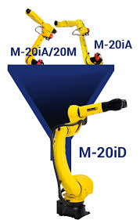

검토 대상 로봇 및 기술 비교 (Tech Specs)
협동 로봇 (Collaborative Robot)
추천 (검사 공정)- 장점: 별도 안전 펜스 불필요로 공간 효율 높음, 작업자와 협업 가능, 티칭 용이
- 단점: 산업용 로봇 대비 구동 속도 및 가반 하중(Payload)이 낮음
- 예상 가격: 3,000 ~ 6,000만 원 (대당/본체)
검토 모델 예시
Doosan Robotics
M-Series / H-Series
Universal Robots
UR10e / UR20
산업용 로봇 (Industrial Robot)
이송/조립 공정- 장점: 고속 구동, 높은 정밀도 및 반복 재현성, 무거운 부품 핸들링 가능
- 단점: 안전 펜스 설치 필수(공간 차지), 전문 프로그래밍 필요
- 예상 가격: 4,000 ~ 8,000만 원 (대당/세트)
검토 모델 예시
Hyundai Robotics
HH7 / HA006B

FANUC
M-10iD / M-20iD
자율 보행 점검 로봇 (Mobile Inspection Robot)
시설/안전 순찰- 장점: 계단 및 험지 이동 가능(4족 보행), 광역 자율 순찰, 열화상/가스 감지 등 다양한 센서 탑재
- 단점: 배터리 지속 시간 한계(약 90분), 페이로드 제한, 높은 도입 비용
- 예상 가격: 1.5억 ~ 2.5억 원 (풀옵션 기준)
주요 활용처
고전압 설비(BSA) 열화상 모니터링, 야간 무인 순찰, 위험 지역 가스 누출 점검
Boston Dynamics
Spot (Enterprise)
핵심 비전 시스템 (Vision System) & 예산
3D 레이저 프로파일러

실링 도포 두께, 높이 정밀 측정용
- Keyence: LJ-X8000 Series (초고속)
- Cognex: 3D-A5000 (고해상도)
예상가: 2,000 ~ 5,000만 원 (대당)
AI 딥러닝 비전 S/W

비정형 외관 불량 및 이종 부품 판별용
- Neurocle: Neuro-T (Auto DL)
- Suakit: Manufacturing Vision AI
예상가: 1,000 ~ 3,000만 원 (라이선스/프로젝트)